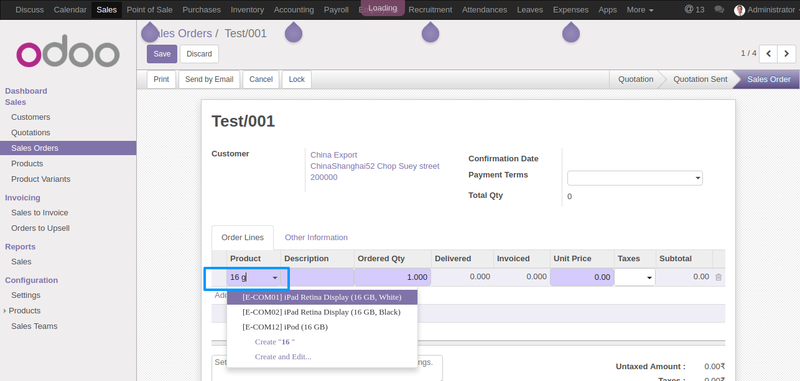
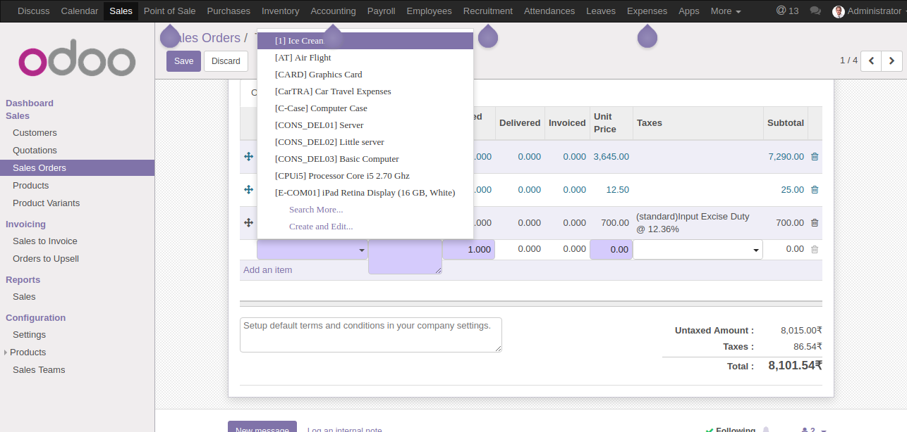

Search By variant or product
This Module use for search by variant or product also increase search data
UniquePy Technologies
Here you can see search by variant result

Here you can see search result data, you can increase as per your requirement
